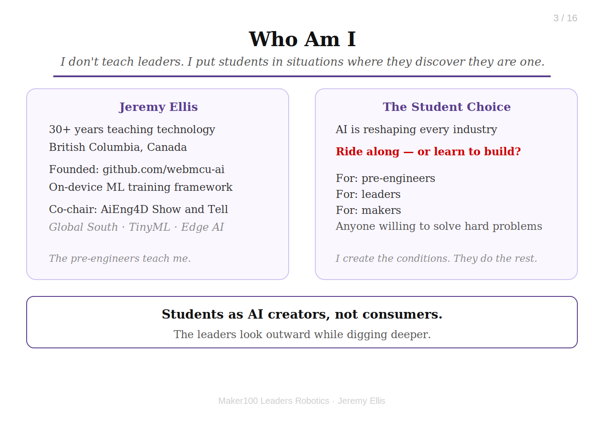
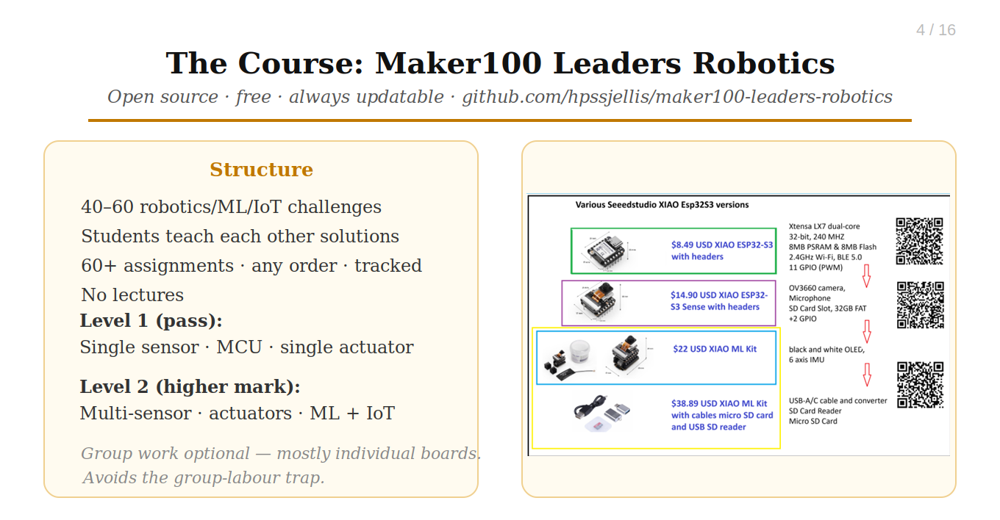
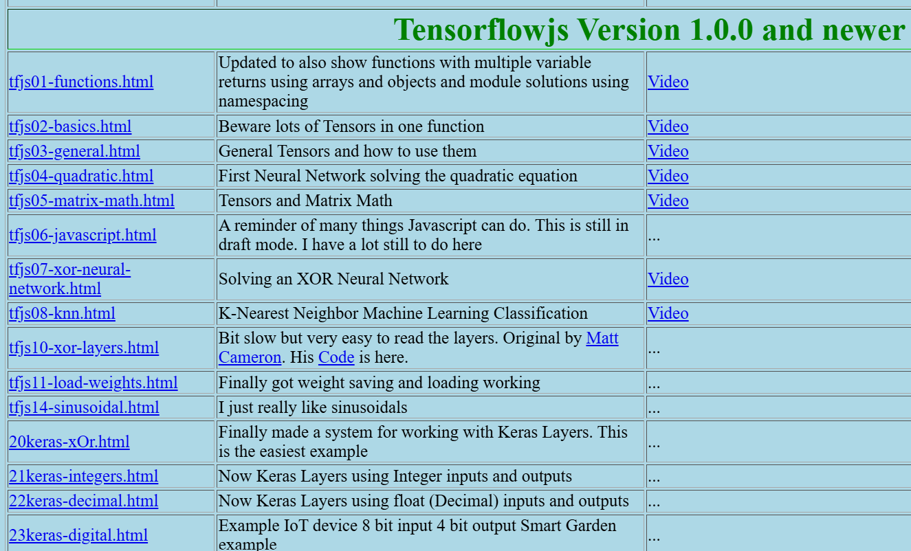
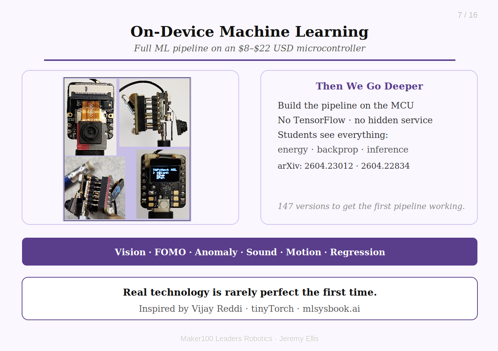
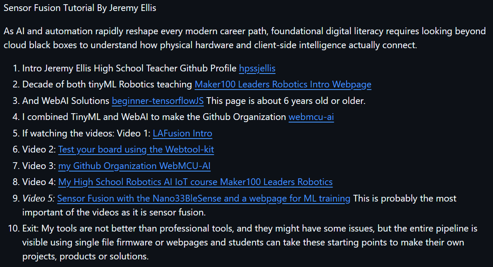

My tools are not better than professional tools, and they might have some issues. What they offer is a pipeline you can see from start to finish, and a starting point you can make your own. Let's look inside the box!
The full presentation starts below.
...
Sensor Fusion Tutorial. LAFusion Bootcamp, By Jeremy Ellis
1
Hi, I'm Jeremy Ellis: High School Teacher and Builder
I like to look inside the box, and I want students to be able to do the same.

I'm a British Columbia technology teacher with about 35 years in the classroom, building open tools for WebAI, TinyML and robotics.
My GitHub profile is hpssjellis. I founded the webmcu-ai GitHub organization to explore readable, open-source machine-learning pipelines, and I have been lucky to share this work at the TinyML for Sustainable Development workshop in São Paulo (July 2024). It is wonderful to be back in Brazil!
My message today is simple and optimistic: when you can read the code from the sensor to the decision, you can understand it, test it and make it your own.
2
A Decade of TinyML and Robotics Teaching
Maker100 Leaders Robotics: a free, open-source high school robotics, AI and IoT course.

Start here: Maker100 Leaders Robotics Intro Webpage
For about ten years I have taught TinyML and robotics with small, low-cost microcontrollers. In Maker100, students solve many real robotics, sensor, actuator, ML and IoT challenges, then teach their solutions to others.
The course repository is at github.com/hpssjellis/maker100-leaders-robotics
3
And WebAI Solutions
Machine learning that runs as a plain web page, right in the browser.

Beginner TensorFlow.js examples: beginner-tensorflowJS
This page is about 6 years old, or older (I started working with Googles devlopment project deaplearnJS in 2017, before it became TensorflowJS), and it is where my WebAI work started. Every example is plain HTML and JavaScript, so a student can open it, read it and change it.
4
Combining TinyML and WebAI: webmcu-ai
One GitHub organization where the browser and the microcontroller work together.

Visit webmcu-ai.github.io and the repositories at github.com/webmcu-ai
I combined TinyML and WebAI so that a web page can collect data, train a model and talk to the board, while the firmware stays a single readable file. Inspired by Vijay Reddi's tinyTorch and mlsysbook.ai, I adapted this philosophy into Arduino-compatible code with help from LLMs.
The ideas are described in two open preprints: 2604.23012 and 2604.22834.
5
Video 1: LAFusion Intro
If you are watching the videos, start here.
Video 1: LAFusion Intro

▶
Open Video 1 on YouTube
6
Video 2: Test Your Board with the Webtool-kit
Check that your board and your browser can talk to each other.
Video 2: Test your board using the Webtool-kit

▶
Open Video 2 on YouTube
7
Video 3: My GitHub Organization webmcu-ai
A tour of the open-source projects that combine TinyML and WebAI.
Video 3: my GitHub Organization WebMCU-AI

▶
Open Video 3 on YouTube
8
Video 4: My High School Robotics AI IoT Course
Maker100 Leaders Robotics, the course behind the tools.
Video 4: My High School Robotics AI IoT course Maker100 Leaders Robotics

▶
Open Video 4 on YouTube
9
Video 5: Sensor Fusion with the Nano 33 BLE Sense
Probably the most important video: many imperfect sensors, one webpage for ML training.
Video 5: Sensor Fusion with the Nano33BleSense and a webpage for ML training

▶
No single sensor tells the whole story. Fusion is how a small board gets a bigger picture.
The Arduino Nano 33 BLE Sense carries many sensors at once: motion, magnetic field, pressure, temperature, humidity, light, color, proximity, gesture and sound. Each one is noisy and limited. Together they can describe what is going on much more reliably.
Open Video 5 on YouTube
10
Exit: Your Starting Point, Not a Finished Product
The entire pipeline is visible, so you can make your own projects, products or solutions.

My tools are not better than professional tools, and they might have some issues.
What they offer is a pipeline you can see from start to finish, using single-file firmware or webpages. Students can take these starting points and make their own projects, products or solutions.
If you would like to talk about sensor fusion, TinyML or WebAI in the classroom, message me on LinkedIn: https://ca.linkedin.com/in/jeremy-ellis-4237a9bb
Thank you, obrigado, and happy building! Use at your own risk.
11
Links, Videos and Resources
Explore the projects, code and demonstrations behind the tutorial, and keep building after the bootcamp.
QR code to this presentation:

Resources
This Presentation Webpage
LAFusion Bootcamp
LAFusion Video Playlist (Videos 1 to 5)
Jeremy Ellis Github Profile
Maker100 Leaders Robotics Intro Webpage
beginner-tensorflowJS (about 6 years old or older)
webmcu-ai: TinyML and WebAI combined
webmcu-ai on Github
arXiv 2604.23012 Pre-Print Paper 1 on-device
arXiv 2604.22834 Pre-Print Paper 2 web Training Assist
Jeremy Ellis LinkedIn
Resources